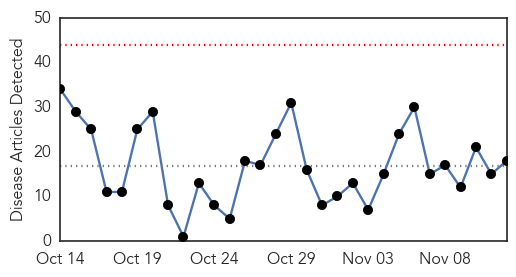

Influenza
30-Day Web Trend
0 alerts, 0 warnings

30-Day Twitter Trend
2 alerts, 0 warnings

Article Locations

Article Confidences

Top Articles:
- 0.998
- middlesborodailynews.com
- 0.993
- SCH holds coordination meeting on H1N1 influenza A
- 0.990
- Flu season hits Hamilton, 1st official case confirmed
- 0.957
- Being proactive is best medicine
- 0.946
- Seasonal flu vaccine to start this month
- 0.922
- China: Two additional H7N9 avian influenza cases reported in Zhejiang
- 0.902
- Missing your flu vaccine? You could be putting your health at risk, doctors warn
- 0.859
- Flu alert as shocking figures reveal thousands of Brits are turning down jab
- 0.814
- More than 1 in 10 New Zealanders are at higher risk of pneumonia due to their age
- 0.806
- Today's stories from newspapers in Caledon
- 0.795
- Protein Sciences Awarded a Small Business Innovation Research Grant for the Development of a Novel Adenovirus Vaccine
- 0.782
- Deadly Bird Flu Flying South for Winter Record 49M Poultry Perished in Spring
- 0.751
- November 12, 2015 Archives
- 0.751
- November 12, 2015 Archives
- 0.751
- November 12, 2015 Archives
- 0.646
- Practices in England giving 100 less flu jabs this season
- 0.618
- Local doctors seeing more patients with norovirus symptoms
- 0.510
- West Virginia lifts poultry gatherings ban
Top Tweets:
-
No tweets found for Nov 12, 2015
Dengue Fever
30-Day Web Trend
0 alerts, 0 warnings

30-Day Twitter Trend
5 alerts, 3 warnings

Article Locations

Article Confidences

Top Articles:
- 0.997
- Dengue Fever – Egypt
- 0.995
- The number of people diagnosed with Dengue Fever rises in many provinces
- 0.994
- Sudan: Humanitarian Bulletin Issue 45
- 0.994
- 101 cases of dengue fever confirmed on Hawaii Island
- 0.993
- Zika virus reaches CARICOM; five cases confirmed
- 0.988
- Healthy humans can give dengue virus to mosquitos
- 0.985
- Brazil Probes Possible Link Between Zika Virus, Birth Defects
- 0.980
- Spotlight on dengue danger after actor stricken with disease, news, Health News, AsiaOne YourHealth
- 0.979
- Dengue fever cases in Kaohsiung remain high
- 0.974
- Dengue outbreak cases in Kaohsiung still peaking
- 0.973
- Health officials say dengue fever fight should be statewide effort
- 0.972
- Zika Virus Reaches the Caribbean Community
- 0.972
- Another 9 deaths from dengue confirmed in Taiwan
- 0.955
- Some residents worry response, outreach to dengue fever lacking
- 0.945
- Words and (in)actions; Residents see failings in state response to dengue fever
- 0.921
- DOH Launches “Fight The Bite”
- 0.898
- When Guns are Outlawed, Only Outlaws Will Have Mosquitos
- 0.726
- Illegals endanger our health
- 0.707
- UNICEF predicts El Niño will have adverse effects for Millions of people in Malawi, Zimbabwe and Ethiopia
- 0.613
- Fears sexual health cutbacks open door to HIV
- 0.607
- Patients, know your rights
- 0.583
- Flooded hospitals turn potential dengue-breeding sites in Chennai
Top Tweets:
-
No tweets found for Nov 12, 2015